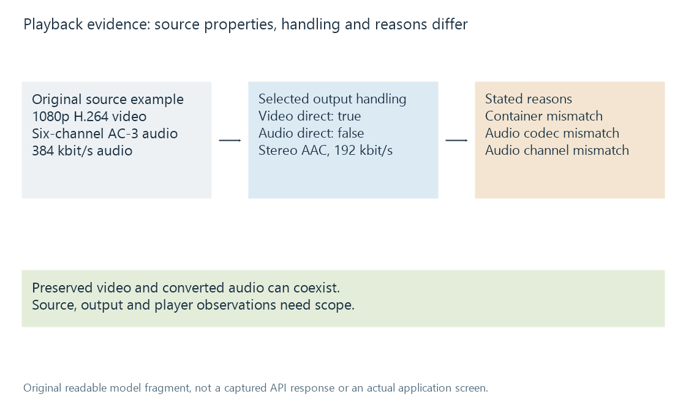

Reading Emby playback information
Emby playback information relates source, selected streams, output processing and session observations whose meanings depend on their measurement scope.
Playback information becomes useful when each field is attached to the part of the session it describes. Source properties, selected tracks, generated output, player observations and conversion reasons are different scopes.
A 4K source and a 720p session output can both be reported correctly. A copied video stream and converted audio can also coexist.
An original video-copy/audio-conversion fragment
The following hand-authored fragment uses public Emby session property names and readable conversion-reason names. It is not a captured API response:
{
"IsVideoDirect": true,
"IsAudioDirect": false,
"VideoCodec": "h264",
"Width": 1920,
"Height": 1080,
"VideoBitrate": 8000000,
"AudioCodec": "aac",
"AudioBitrate": 192000,
"AudioChannels": 2,
"TranscodeReasons": [
"ContainerNotSupported",
"AudioCodecNotSupported",
"AudioChannelsNotSupported"
]
}
In the described original case, the video is preserved while selected audio is prepared as stereo AAC. The reasons identify several relevant mismatches; they do not say that playback failed.

Emby's public model exposes separate video/audio direct-handling fields and conversion information. The exact fields shown by a particular app or diagnostic surface can vary.
Source and output should be compared deliberately
| Question | Relevant information |
|---|---|
| What is stored in the library resource? | Source/container and source stream analysis |
| Which streams did the viewer choose? | Source-qualified audio/subtitle selection |
| What representation is being delivered? | Output/container and stream processing information |
| Why was another path chosen? | Capability/limit decisions and reason context |
| What happened at the player? | Player state, buffer and presentation observations |
Matching source and output codec strings does not establish stream copying. The same codec can be encoded again. Stream handling or mapping supplies stronger evidence.
Conversely, a process using conversion infrastructure can preserve video while converting audio. That is the Direct Stream relationship developed in the example.
Reasons and results differ
A reason such as unsupported container can explain selection of a successful adapted path. An unsupported selected audio presentation can explain another stream's conversion.
A direct-play error can describe a fallback after an attempted path. That needs event order as well as the final session information.
One reason need not describe every relevant condition. An incomplete field or absent observation should remain incomplete rather than becoming an invented proof of compatibility or zero resource use.
Several progress clocks can appear
The viewer's programme position, server conversion position, received-media ranges and processing speed answer different questions.
A converter at programme minute 30 while playback is at minute 20 can have produced ahead. It does not prove the player has ten minutes buffered or that the viewer watched thirty minutes.
Likewise, a percentage of conversion completion is not watched coverage. Source duration and output-origin mapping can influence how progress coordinates are interpreted.
Transcoding speed explains media-time versus wall-time units. A conversion log supplies more direct stream-operation and event evidence.
Keep the session context
The source, app/player path, selected tracks, requested position and observation time belong with the fields. A source change or restarted job can supply another context.
See Also
- Direct Play in Emby
- Direct Stream in Emby
- Video transcoding in Emby
- Transcoding speed, fps and media time
- Dropped video frames during playback